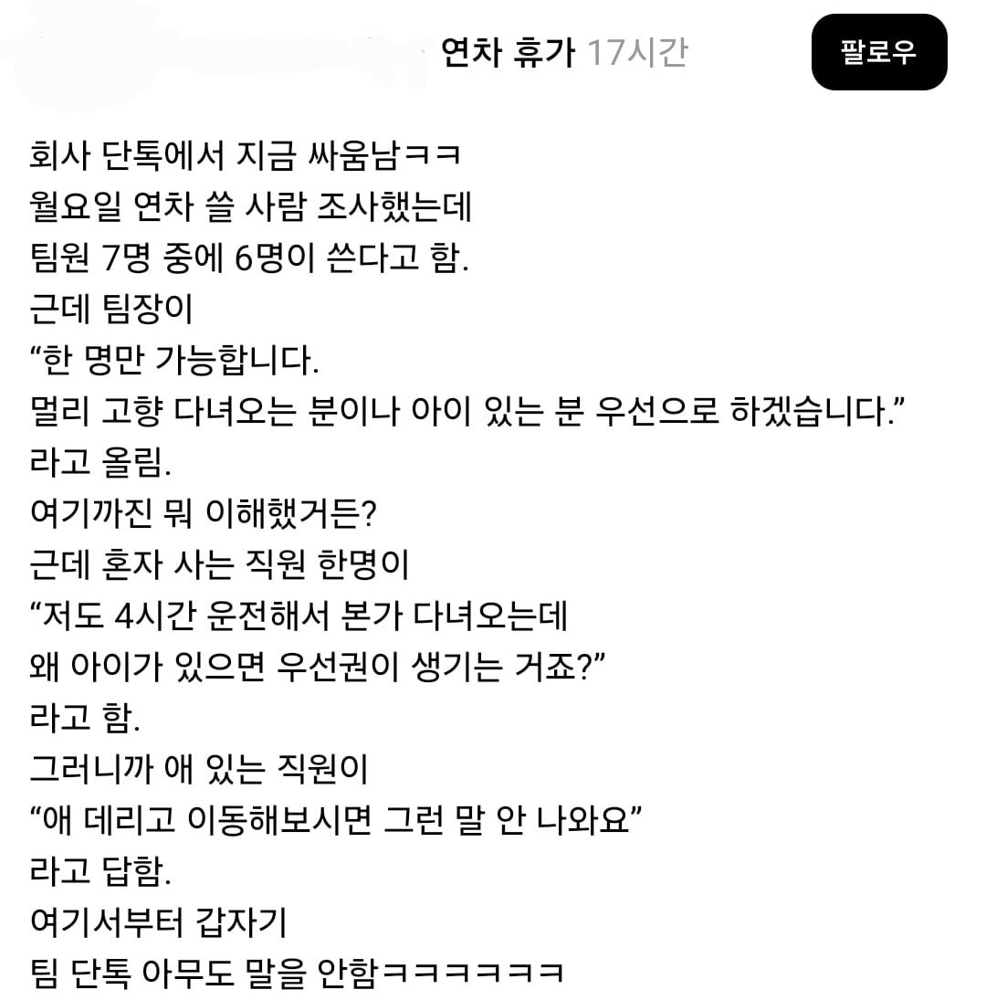
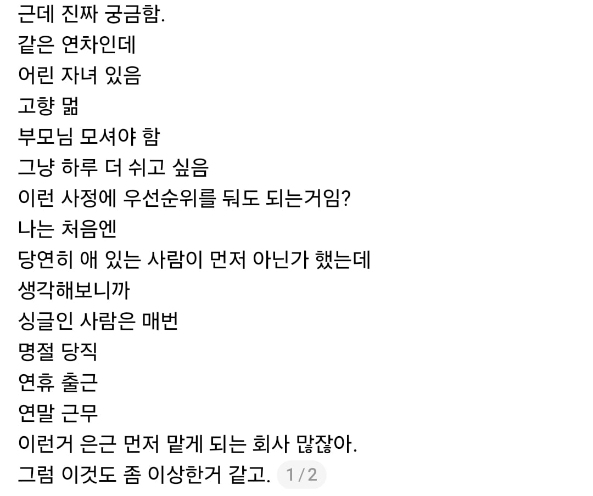
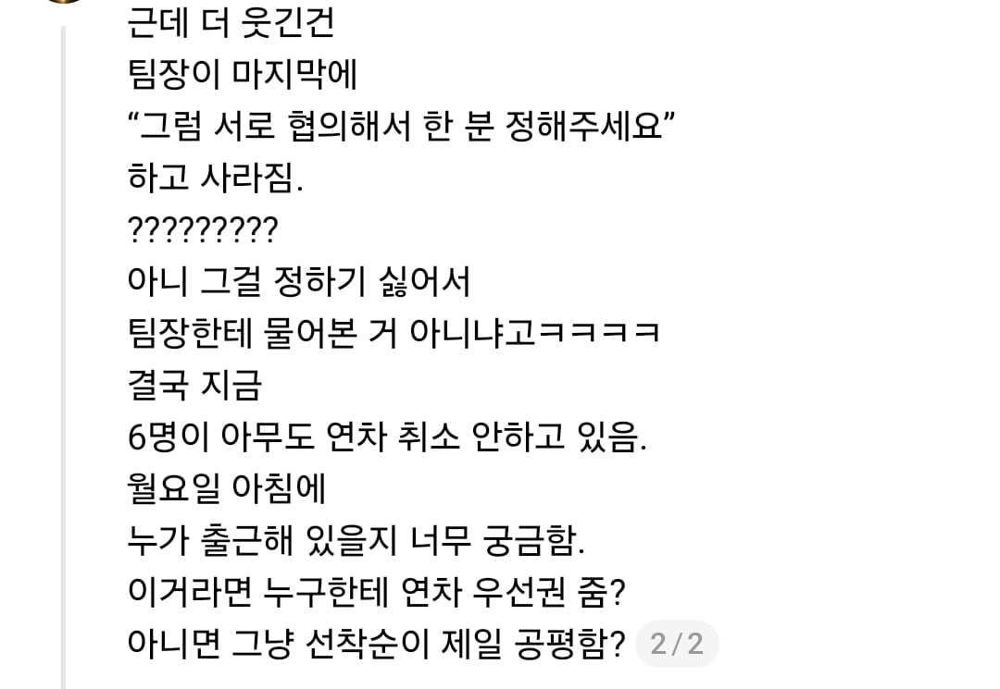

보통 먼저 쓰는 게 장땡 아니었나...



보통 먼저 쓰는 게 장땡 아니었나...
대기업은 애초에 자율이고, 위에서 절대로 뭐라고 안함.
중소이하는 뒤로 불이익주면됨. 연봉동결이나 진급 안시키면됨.
그리고 저렇게 다있는 방에서 서로 쓰겠다고, 지르는 직원? 한명도 못봄. 고로 주작이다~
위에서 직접 뭐라곤 안하고 인사평가에서 조질수는 있음
니가 아는게 전부가 아니다~
나같음 그냥 제비뽑기 시킴 그리고 다음번에 똑같은 상황 발생하면 요번 1등한사람은 빠지고
네가 본문 팀장 보다 훨씬 낫다
팀장 새끼 보니까 전 직장 매니져 년 생각나네
동료한테 문제가 있어서 보고해도 둘이 애기해보라 하거나 지가 하기 싫다고 다른 매니져한테 떠넘겼지
교통정리 하라고 있는 관리자인데 무책임하네
우린 저런 상황까지 가면 사다리 타는데 ㅋㅋㅋㅋㅋ 물론 그런일은 1년에 1번 정도?
가위바위보 시켜라
팀장이 무능하고 멍청하네, 저 상황을 회피하고 알아서 하라고 하다니ㅋㅋ
ㄹㅇ 팀원들 개불쌍
똑똑한거지 저 상황에 정답이 있냐
정답이 없으니까 팀장이 총대매고 교통정리 해야하는거임
저대로 다 연차쓰고 출근안하면 결국 무능한 팀장 잘못임 ㅋㅋ
그 논리대로라면 어짜피 좃소에서 팀장도 한달에 20~30만원 더 받는 일개 직원일 뿐임 ㅋㅋ
연휴 다음날 출근안하면 업무 병신되는 회사라면 직원들이 알아서 나와야 하는거고
그게 아니라 그냥 꼰대짓하는 K-좃소라면 팀장도 뭘 어떻게 해야하는건데?ㅋㅋㅋㅋ
직원들이 저렇게 회피하는건 무능/유능이랑 관계없고, 팀장이 회피하면 무능이냐?
어짜피 뒷짐지고 나몰라라 하는건 대표책임이지
애기들이 어리면 휴일이 평일보다 더 지침ㅋㅋ
그렇다고 벼슬은 아님
지한테나 귀한 자식이지ㅋㅋ 남들이 먼상관
애 키울때가 힘든건 다 동의하고 옛날엔 누구나 다 겪는 시기라 생각해서 저런 갈등이 적었는데
요즘은 저게 합의가 안되네 ㅋㅋ 그래도 사회적 분위기는 임산부, 육아하는 직원들의 편의를 봐주는 쪽이니 팀장이 잘 얘기해서 넘겨줘야지
헛소리 마셈 그럼 그 편의 봐주는 직원들은 뭘더 받는데?
사회적으로 봐준다는게 뭘 더 받고 안받고가 아님.... 지하철에서 임산부 자리 비켜준다고 내가 뭘 더 받는건 아니잖아
직장에서는 그 사회적이라는게 안통함 당장 내가 더 힘든데 그걸 왜 봐줌? 그러니까 이런 일이 나오는건데 헛소리 하지 마세요
아니 직장도 사회의 일부임. 배려를 받는쪽이 당연하다는듯이 "애 데리고 이동해보시면 그런 말 안나와요" 이ㅈㄹ해서 문제된거지.
내가 무슨 사회 전체를 부정했어? 이런 가족이나 애있는 집이 먼저라는 사회적인 공감대 하나만 부정한거지? 요즘 절대 이런 소리에 공감해줄 사람 없음 30대 40대까지 미혼이 넘처나는 사회인데 이걸 왜 공감해줌? 이것도 네가 말한 사회임
니가 애없는 3040을 대변하는것처럼 말하진 마... ㅋㅋㅋ
니 말이 맞음. 직장에서는 1인분을 하는가 못하는가 뿐, 노부모를 모시는지, 애가 있는지, 싱글인지 더불인지 ㅈ도 상관없음. 애 있으면 육아유직할 수 있는 권리, 그거면 됨. 뭔 ㅆㅂ 연차를 한명만.
그러니까 이런 사례들을 보고 헛소리하지말라고 화내는 사람들이 많아진게 사회가 달라지고 있는거다 하고 받아들이면 됨
그러니깐 육아휴직을 없애야함
오냐오냐 하니깐
누군 애 안키우냐?
븅신들이 예전엔 선배가 돈으로 후배들 먹이고 끌어주고 하니깐 불합리한게 있어도 배려한거지
요즘 애새끼 키운다고 유세란 유세는 다 떨고 배려강요하면서 지들은 남에게 눈꼽만큼도 배려안하려고 하니깐 지랄난거지
애키우는데 어쩌라고 애때문에 힘들어서 일제대로 못하면 그만두고 딴일 알아봐
아니야 나 내일 출근할꺼야 애 어린이집못가서 집에있는게 더힘들어
차라리 가위바위보하라 하든가 ㅋㅋ
무능한데
팀원들 어찌저찌 자기들끼리 협의하면
팀장은 자기가 유능한다 스스로 생각하겠지 뭐
우리도 팀장이 종종 너네들이 알아서 한명 출근해 하면 ㅈ같음. 이전엔 팀장다음이 나라서 그냥 내가 나오고 말았는데 결혼 후엔 이제 그것도 어려우니까 더더욱.
설득하고 격려하라고 달아준 자리를....
알아서 하라고???
일단 제일 문제는 팀장이네 ㅅㅂ ㅋㅋㅋㅋㅋ
저출산 국가 애국자 우대입니다 했으면 난 닥치고 출근할거같긴함
저건 닥 팀장 병신 잘못임 저딴것도 뒤로 빠질 정도면 일하는거 안봐도 눈에 보임
육아/임신으로 벼슬짓 하려는 씹창년들이 너무 많은데 리미트 쌓이면 한번 역반응 올거다 ㅋㅋ
배려해주는거지 배려를 요구하지마라
리더쉽의 부재네 ㅋㅋ
저기서 교통정리 잘하는 놈을 다음번 진급 시키는게 가장 낫다
저럴꺼면 팀장은 왜 있는 거냐
걍 짬순으로 짜르는거 아님?
하루 더 쉰다고 일 안굴러가나?? 걍 쿨하게 쉬게 해주지
나같으면 가위바위보나 사다리탔다
우리 삼실은 아무도 안써서 막내 직원한테 강제로 쉬라캄
저런거 조율하라고 팀장자리에 있는거 아님?
순서를 정해주면 되지, 이번 연휴는 사정있는 A가, 다음 연휴는 싱글인 B가